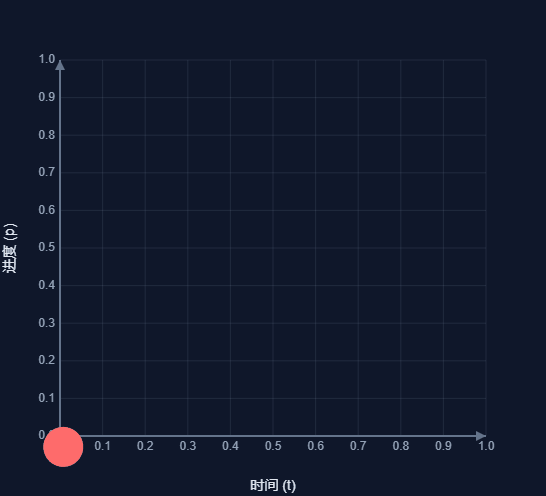

保存文件中......
文件
加载
保存到本地（rpe 格式）
保存到本地（纯文本多 K 格式）
填充
曲线音符
编辑
撤销 (Ctrl+Z)
重做 (Ctrl+Y)
添加判定线
打开/关闭事件
打开/关闭触控模式
打开/关闭预览
复制模式：内部剪贴板
帮助
制谱器帮助
pez打包帮助
Tap
Drag
Flick
Hold
撤销
重做
历史
删除
音符编辑
X坐标：
起始时间：
结束时间：
朝向：
Up
Down
真值：
普通音符
假音符
Y轴偏移：
可视时间：
事件编辑
缓动类型：

线性
▼
起始时间：
结束时间：
起始值：
结束值：
判定线编辑
名称：
父线：
bpm倍率：
音符批量编辑
数值种类：
X
起始时间
结束时间
Y轴偏移
所在判定线（只支持“设为此值”）
数值下界：
数值上界：
缓动类型：
线性
▼
修改方式：
增加此值
设为此值
乘以此值
取最大
取最小
以此值为中心翻转
周期数列：
扰动：
执行
bpm：
80
竖向格子数：
横向格子数：
ex
+
-
曲线填充音符
测试功能
×
起始时间：
结束时间：
包含边界
x 起点
x 终点：
填充：
tap
flick
drag
密度：
曲线类型：
线性
▼
确认
BPM 管理
×
添加
帮助页面
×
to Tap
to Drag
to Flick
绕 y 轴翻转
 Drag
Drag Flick
Flick Hold
Hold